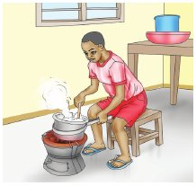
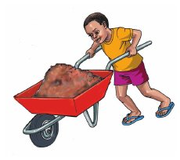
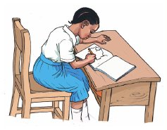
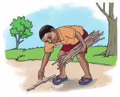

Zoezi la pili
Je, watoto hawa wanafanya nini?


1.
2.
3. 4.


5.
1. Fano ..................................
2. Puna anasukuma ............
3. Tizo ......................... kuni.
4. Sia ........................ picha.
5. Sudi na Adila ........................